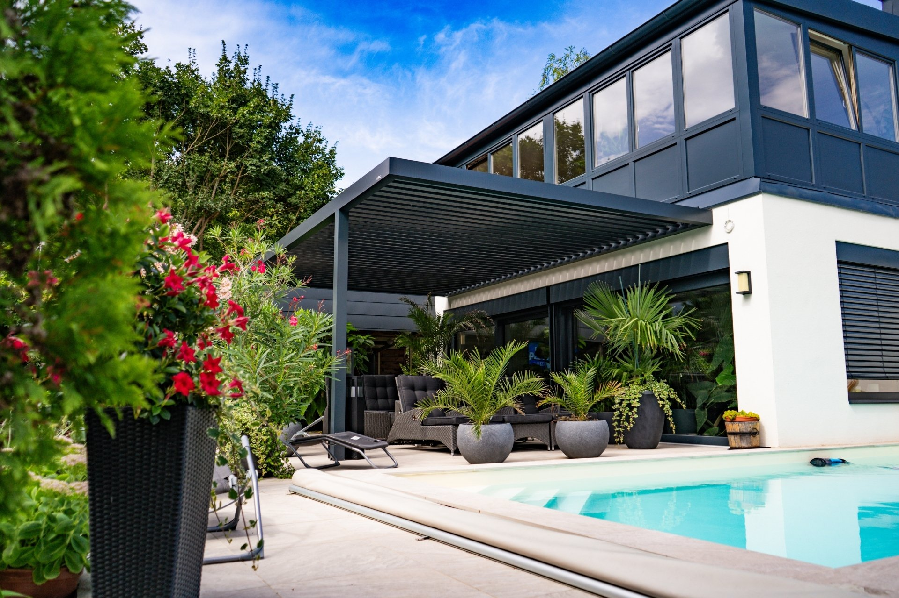
Pergola s pootvorenými lamelami
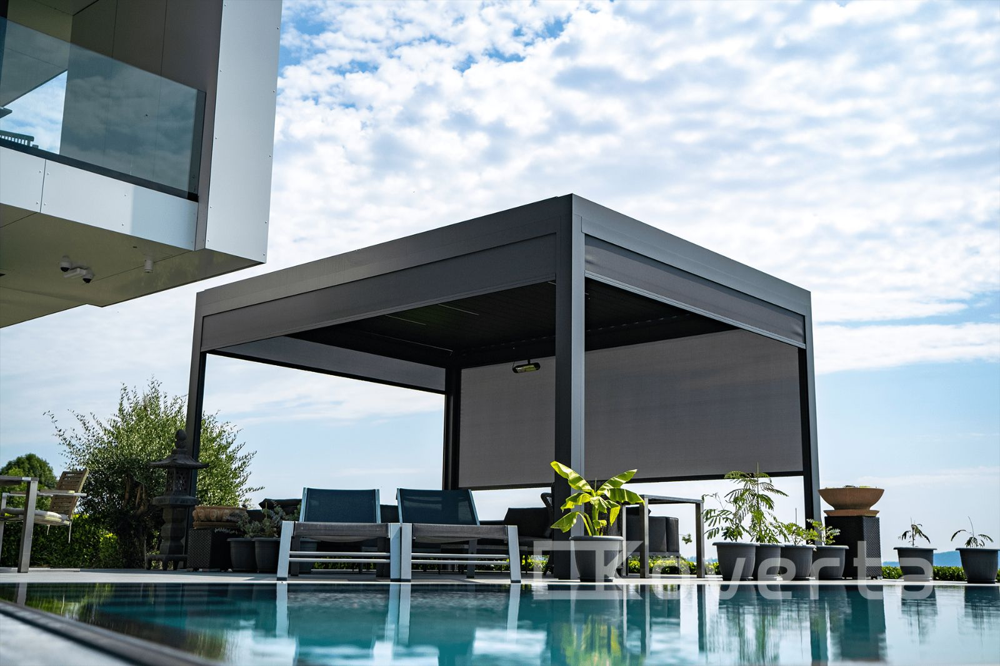
Hliníkové lamely otvoríte, keď chcete slnko a vzduch, a zatvoríte, keď potrebujete tieň alebo ochranu pred dažďom.
Modely SL
Model vyberieme podľa rozmeru terasy, snehových podmienok a výbavy, ktorú chcete – napríklad ZIP rolety, sklo alebo osvetlenie.
Otvoriť konfigurátorČo potrebujeme od vásStačí rozmer terasy, fotografia miesta a obec. Z toho vieme vybrať vhodný model, počet stĺpov a pripraviť cenu.
Poslať rozmery a fotografiu| V čom sa líšia | Rám 170Keď má pergola pôsobiť subtílne | Rám 240Keď má jeden modul pokryť viac plochy |
|---|---|---|
| Lamela | 200 × 28, 36 alebo 42 mm | 200 × 36, 200 × 42 alebo 270 × 60 mm |
| Najväčší modul | 4,8 × 6,5 m na štyroch stĺpoch, 4,8 × 9,3 m na šiestich | 6,0 × 6,0 m na štyroch stĺpoch, 4,8 × 9,0 alebo 5,0 × 8,0 m na šiestich |
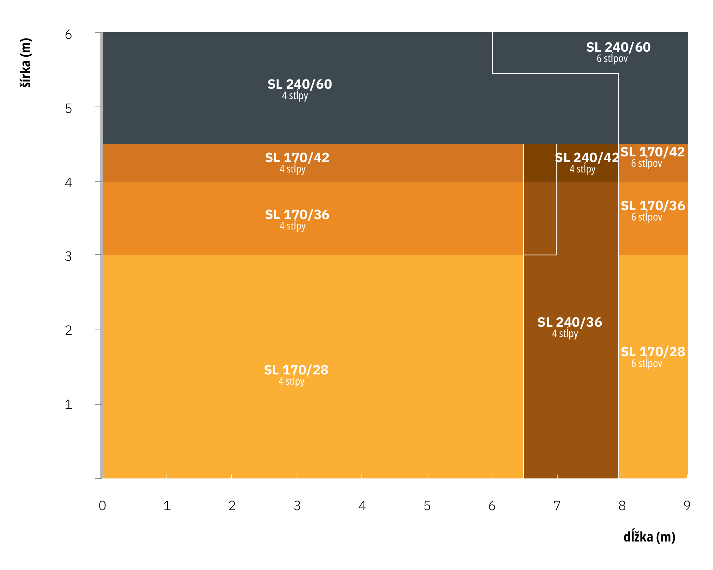
Pri SL 240/60 je jeden modul najviac 40 m². Väčšiu terasu prekryjeme viacerými modulmi vedľa seba.
| Model | Lamela | 4 stĺpy (šírka × dĺžka) | 6 stĺpov (šírka × dĺžka) |
|---|---|---|---|
| SL 170/28rám 170 | 200 × 28 mm | 3,5 × 6,5 m | 3,5 × 9,3 m |
| SL 170/36rám 170 | 200 × 36 mm | 4,3 × 6,5 m | 4,3 × 9,3 m |
| SL 170/42rám 170 | 200 × 42 mm | 4,8 × 6,5 m | 4,8 × 9,3 m |
| SL 240/36rám 240 | 200 × 36 mm | 4,3 × 8,0 m | 4,3 × 9,0 m |
| SL 240/42rám 240 | 200 × 42 mm | 4,8 × 8,0 m | 4,8 × 9,0 m |
| SL 240/60rám 240 | 270 × 60 mm | 6,0 × 6,0 m | 5,0 × 8,0 m |
Z našich montáží
Realizácie bioklimatických pergol Soltec.

Pergola s pootvorenými lamelami
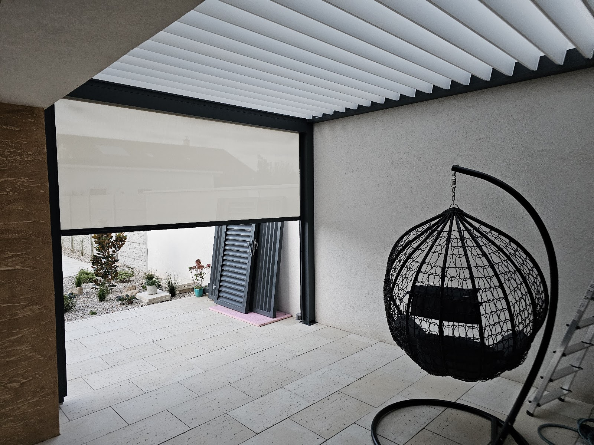
Detail lamiel v otvorenej polohe
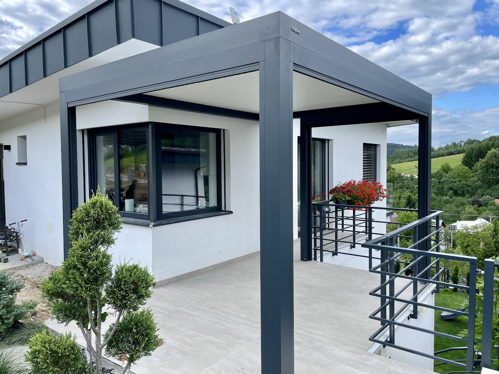
Realizácia bioklimatickej pergoly pri rodinnom dome
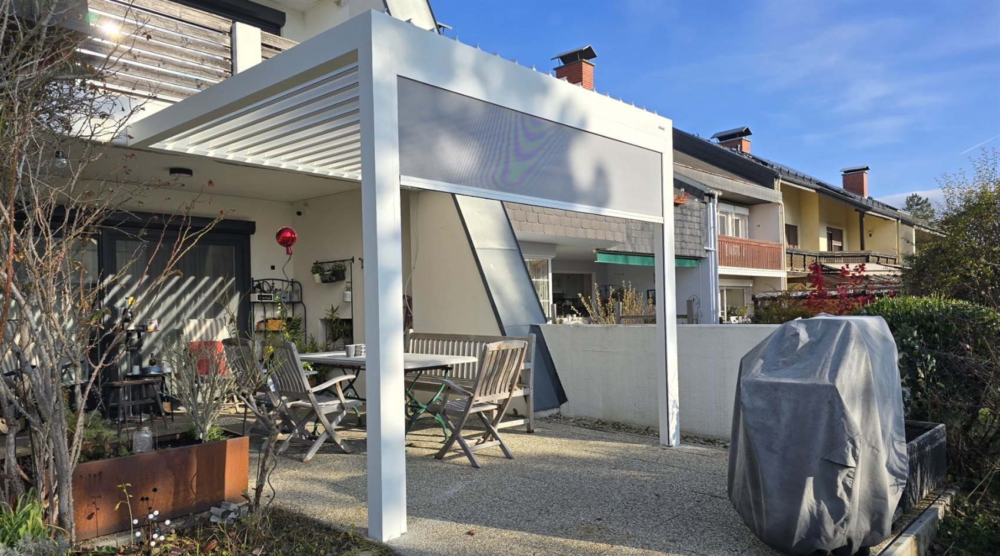
Pergola s čiastočne zatiahnutými ZIP roletami
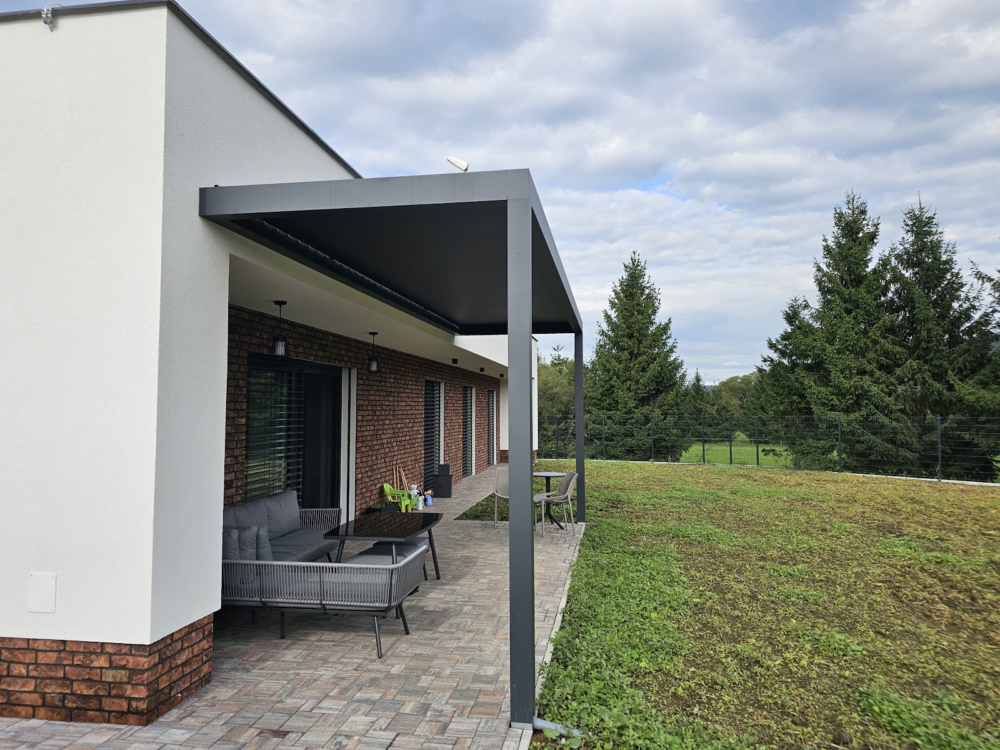
Realizácia bioklimatickej pergoly nad terasou
Osadenie
Rám je pri všetkých rovnaký, mení sa len to, o čo sa opiera. Voľne stojaca potrebuje štyri stĺpy, pri stene stačia dva a v rohu jeden — a to je aj rozdiel v tom, koľko miesta na terase ostane voľného. Ktorá zostava sadne na vaše miesto, povieme pri návrhu.
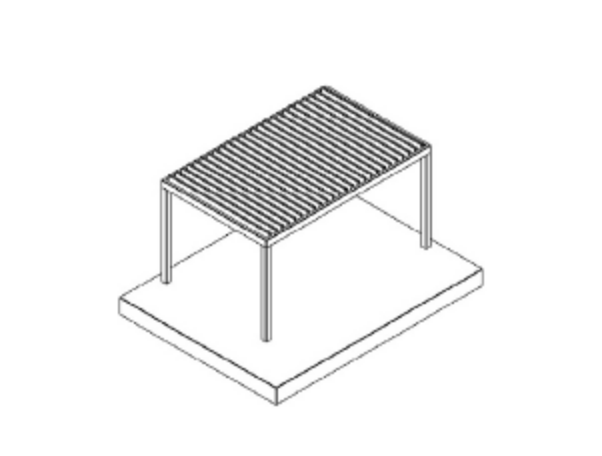
Voľne stojaca
štyri stĺpy, do domu sa nič nekotví
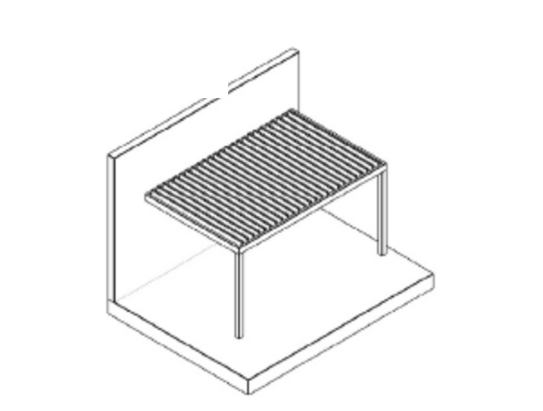
Pri stene domu
rám sa opiera o fasádu, vpredu ostanú dva stĺpy
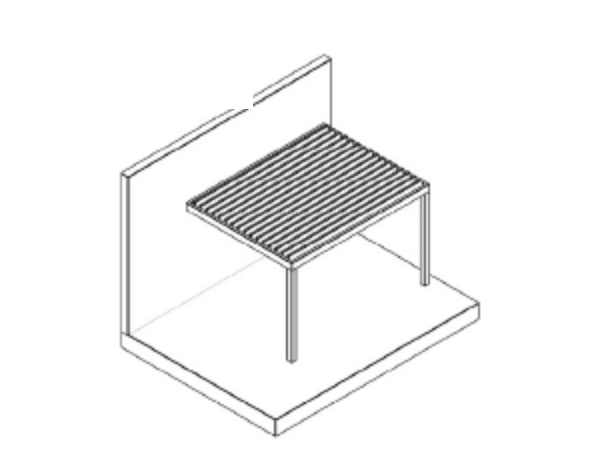
Pozdĺž steny
dlhá strana na stene, voľnému rohu stačí jeden stĺp
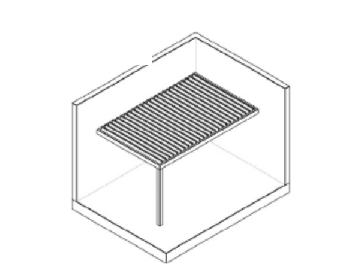
V rohu dvoch stien
dve strany nesie murivo, tretiu jeden stĺp
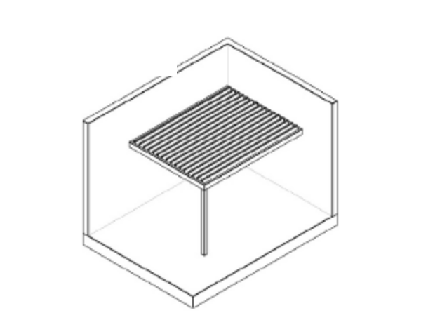
Medzi tromi stenami
atrium alebo dvor, kde je voľná jediná strana
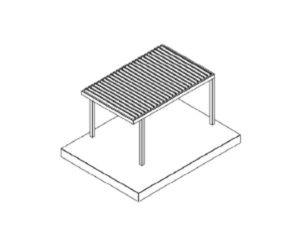
Predsadená pred terasu
strecha presahuje pred stĺpy, takže tieň padne aj za ne
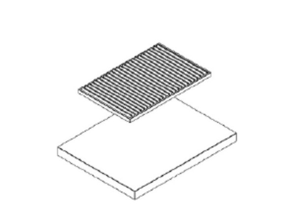
Bez vlastných stĺpov
rám sadne na hotovú konštrukciu alebo múrik
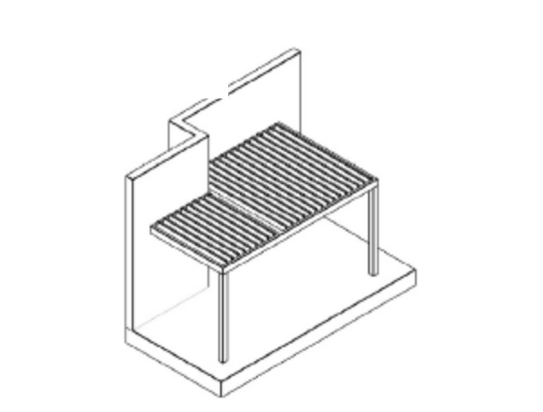
Dva moduly za sebou
dlhá terasa v dvoch výškach alebo dvoch šírkach
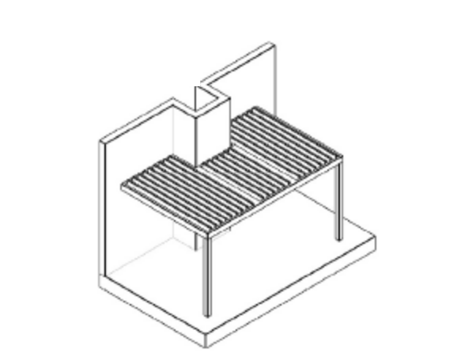
Dva moduly do L
pergola obtočí roh domu jedným tým istým rámom
Prečo bioklimatická
Pevná strecha zostáva v jednej polohe. Otočné lamely dávkujú tieň aj prúdenie vzduchu, pri zatvorení chránia pred dažďom a po otvorení nechajú terasu pod oblohou.
„Je to ako sedieť pod stromom.“ tak to opisujú zákazníci
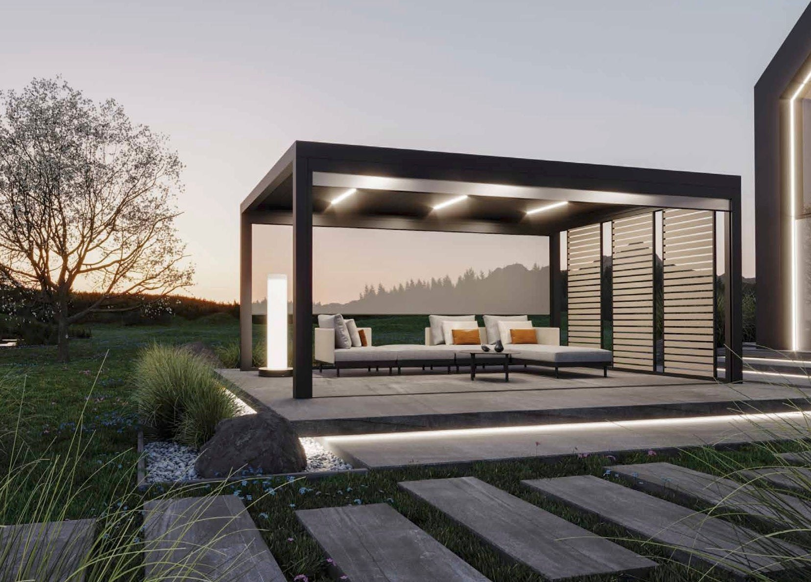
JarLamely privriete tak, aby pustili slnko a obmedzili prievan. Bočná ZIP roleta pomôže chrániť otvorenú stranu pred vetrom.
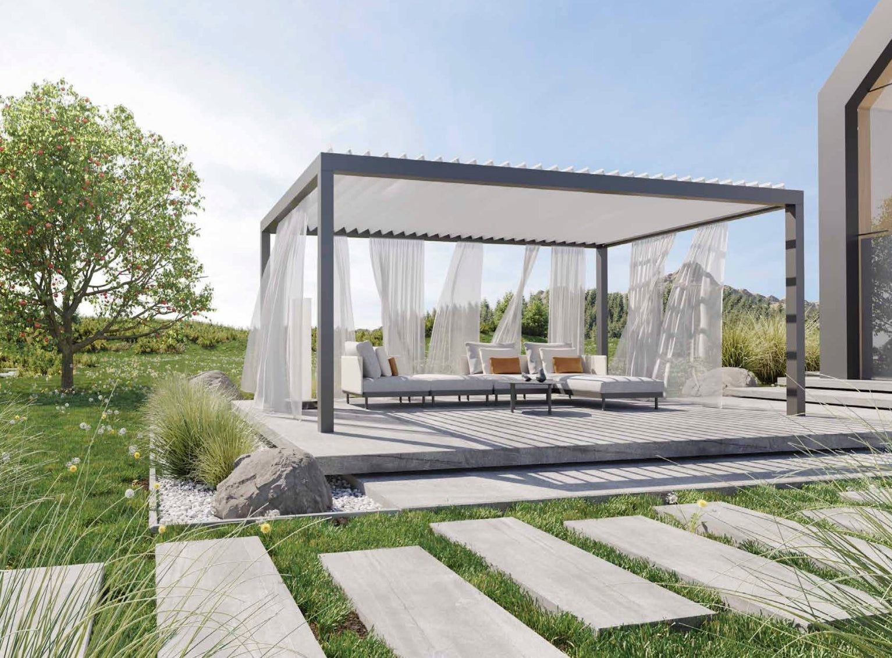
LetoZatvorené lamely držia súvislý tieň. Teplý vzduch pod nimi neostáva stáť. Pootočením lamiel ho pustíte hore a von.
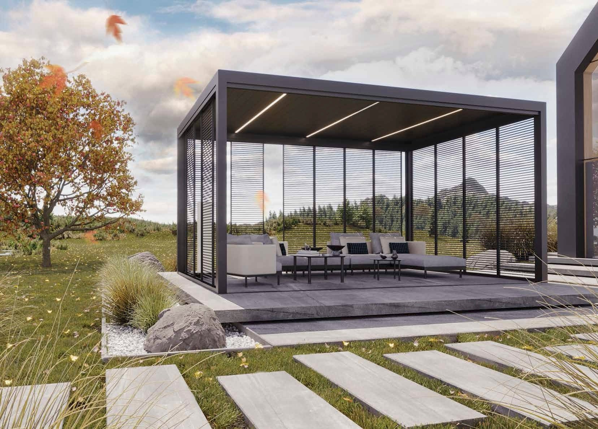
JeseňZatvorené lamely výrazne chránia pred dažďom. Voda stečie do integrovaného žľabu v ráme a ďalej cez stĺpy; dažďový snímač ich môže zavrieť automaticky.
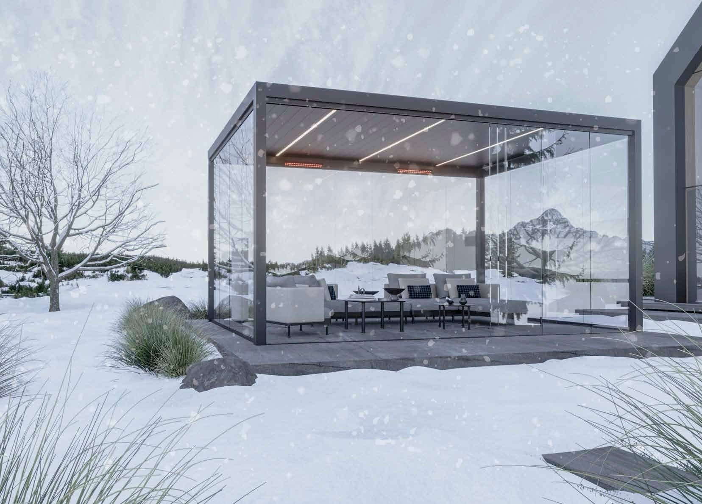
ZimaSklenené alebo ZIP steny obmedzia studený vietor a infraohrievač predĺži čas na terase. Poloha lamiel pri snehu sa riadi vybraným modelom, šírkou a odporúčaním pre konkrétnu zostavu.
Z čoho je to postavené
Otočná strecha je len jedna časť. To, či pod ňou v daždi nezmoknete a či sa zavrie sama, rozhoduje odvodnenie a elektronika.
Nezáväzná cenová ponuka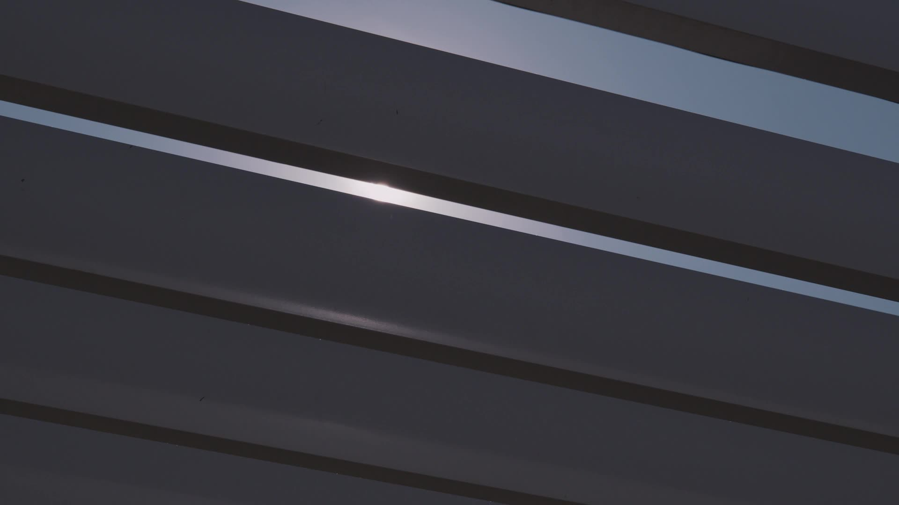
Lamely
Zatvorené lamely tvoria súvislú strechu, otvorené pustia dnu vzduch aj svetlo. Hliník s práškovým lakom.
Lamely
otočné hliníkové
Materiál
hliník, lak RAL
Odvodnenie
Voda zo strechy tečie vnútrom rámu, potom stĺpom dolu a do zeme. Na fasáde ani na konštrukcii nie sú žiadne vonkajšie zvody.
Zvody
žiadne vonkajšie
Cesta vody
strecha → stĺp → zem
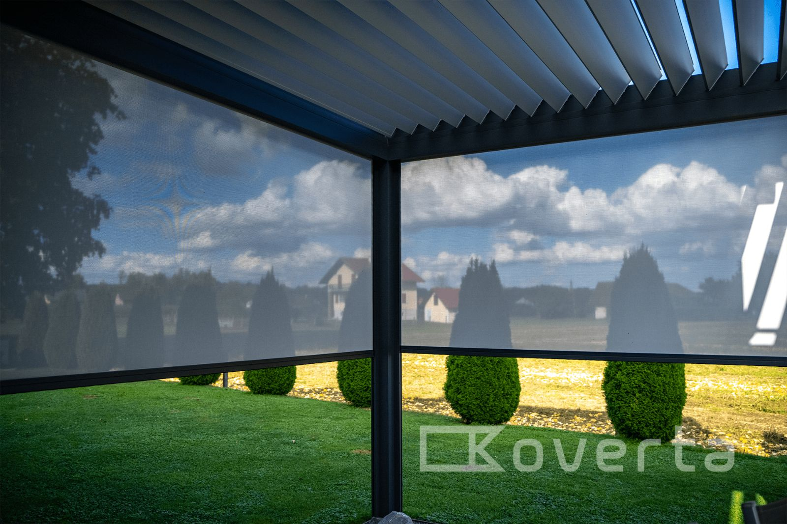
Ovládanie
Lamely ovládate diaľkovo alebo vypínačom. Dažďový snímač ich zavrie, aby voda odtekala konštrukciou; veterný ich pri rizikových podmienkach otvorí, aby znížil zaťaženie.
Ovládanie
diaľkové aj vypínač
Automatika
dážď a vietor reagujú odlišne
Šesť odtieňov, ktoré objednávame najčastejšie. Lakuje sa práškovo v odtieni z palety RAL; cena sa podľa odtieňa líši a potvrdzujeme ju v ponuke.
Čo je v cene
Výbava
Z pergoly sa dá urobiť večerné posedenie, chladný kút pri bazéne alebo letná kuchyňa. ZIP rolety, sklo, brisoleje, pevné steny, LED, kúrenie, senzory aj ovládanie mobilom sú doplnky za príplatok. Povedzte nám ich hneď na začiatku, aby s nimi návrh rátal.
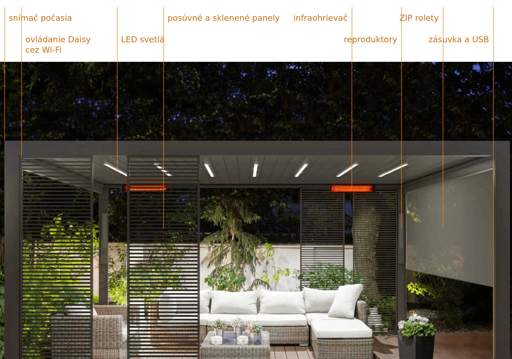
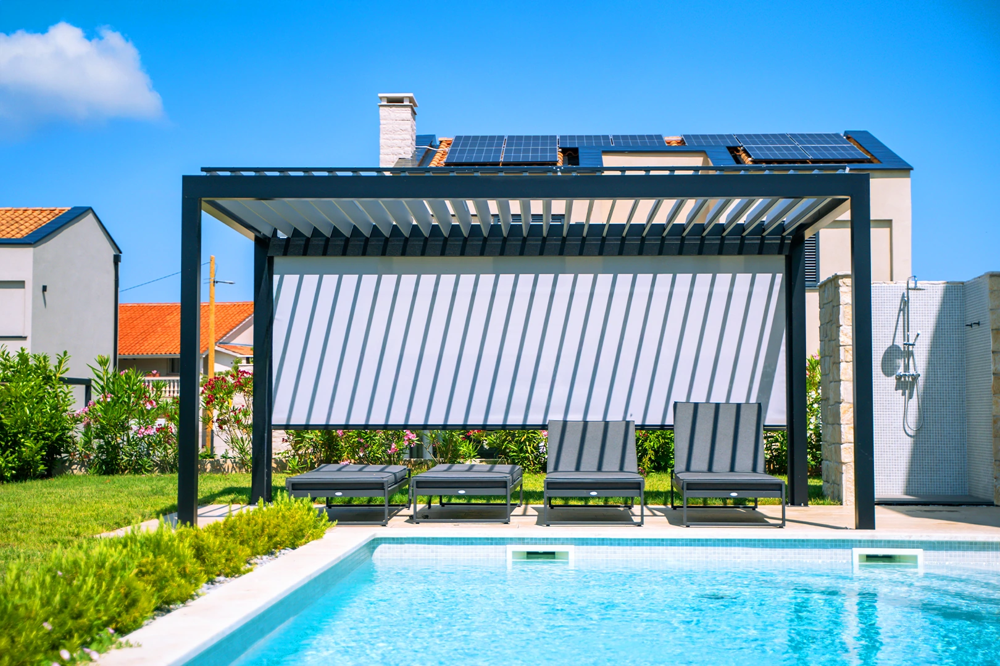
Tkanina zo sklolaminátu s PVC je vedená v bočnej lište so zipsom, takže ju vietor nevytiahne z vedenia. Vyberá sa otvorenosť 3 % pre viac súkromia alebo 6 % pre vzdušnejší výhľad; motor a diaľkové ovládanie sú súčasťou systému, veterný snímač je voliteľný.
Rozmer
do 2 800 × 6 500 mm
Otvorenosť
3 % alebo 6 %
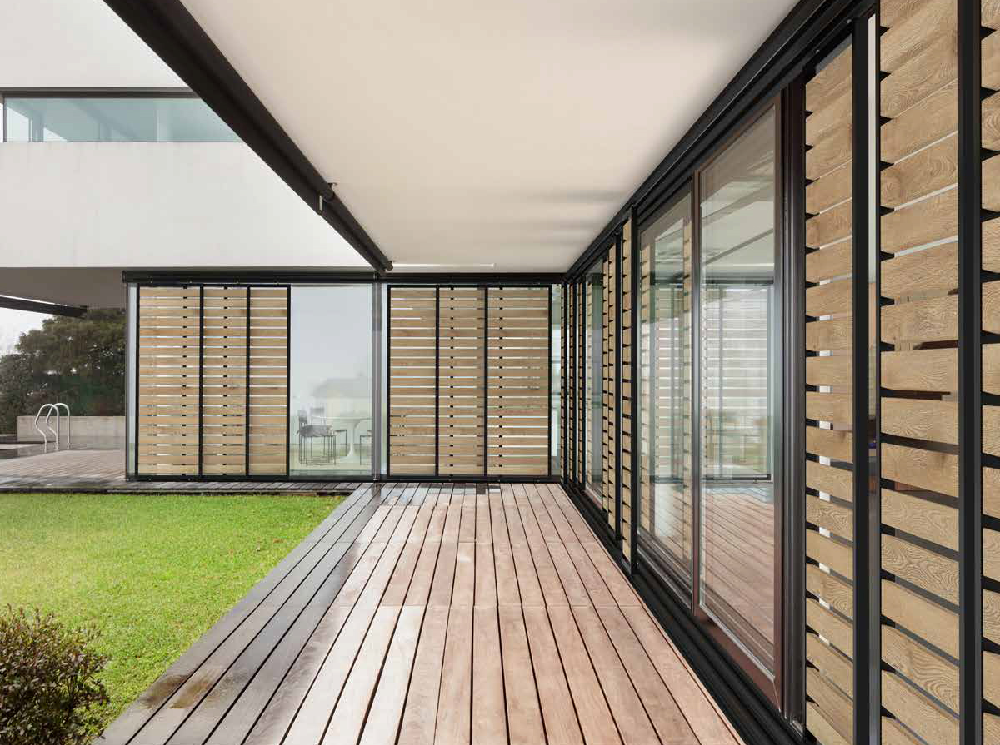
Manuálne posuvný hliníkový rám s drevenou alebo hliníkovou výplňou sa pohybuje medzi hornou a spodnou koľajnicou. Jedna, dve alebo tri dráhy dovolia panely presunúť tam, kde práve treba súkromie alebo tieň; nejde o tesnú stenu proti dažďu.
Výška
do 3 000 mm
Vedenie
1, 2 alebo 3 dráhy
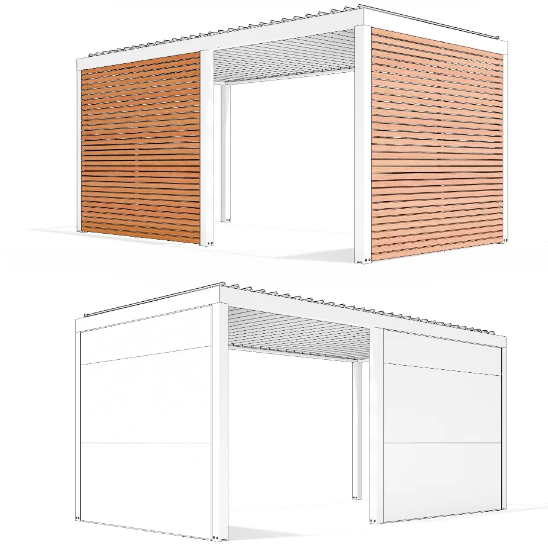
FW25 zo sibírskeho smrekovca, FI30 zo zatepleného panela. Po celej strane alebo len po časti; nesú ich sekundárne stĺpy kotvené do zeme.
FW25 drevo
dĺžka do 4 m
FI30 panel
dĺžka do 6 m
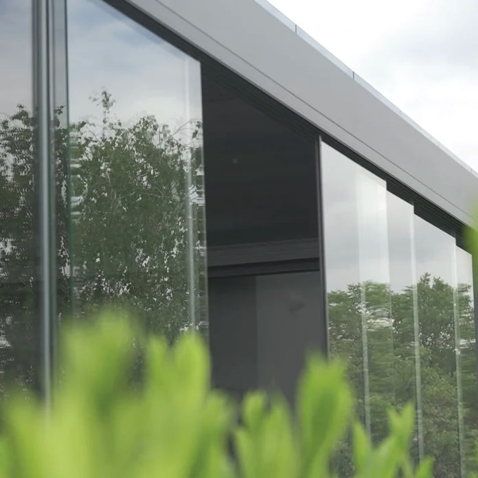
G1 sa posúva do strany, G2 sa skladá na seba. Zastavia vietor a dážď, výhľad nechajú. Zámok ako doplnok.
Sklo
kalené 10 mm
Pohyb
posuvné aj skladacie
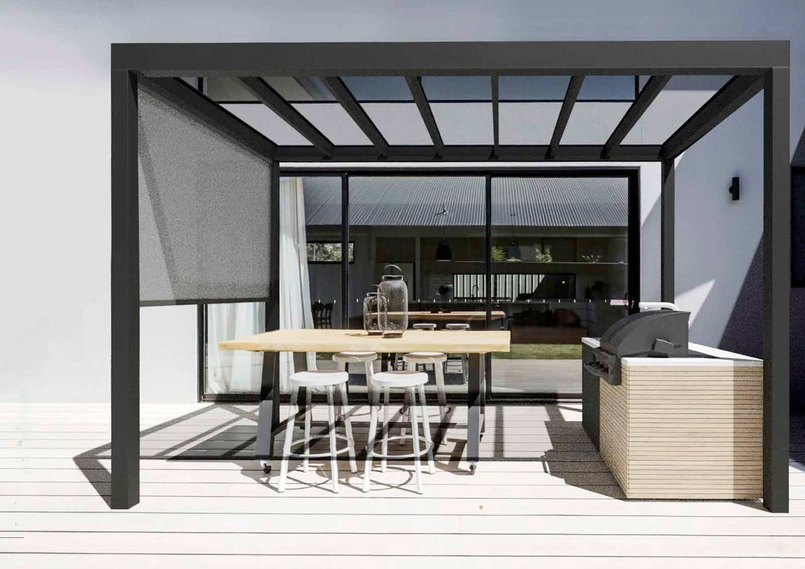
Bezpečnostné sklo kombinovateľné s pergolou SL 170 aj SL 240. Púšťa svetlo do miestností za terasou.
Hrúbka
12 alebo 16 mm
Tabuľa
do 800 / 1 200 mm
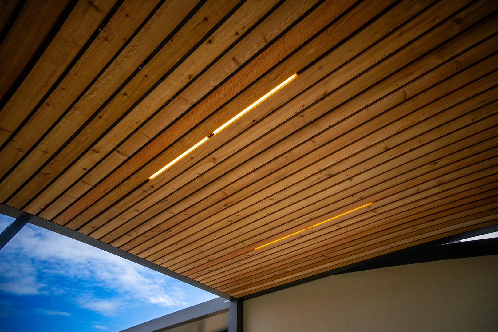
LED priamo v lamelách alebo v ráme, infraohrievače na predĺženie sezóny. Zásuvka v stĺpe, ovládanie diaľkovým ovládačom alebo mobilom.
Svetlo
LED v lamelách
Teplo
infraohrievače
Normy a záruka
Lamely sú pohyblivé, preto má každá zostava svoju bezpečnú polohu pri snehu a vetre — určíme ju pri návrhu podľa modelu, šírky a miesta. Snímače to riešia za vás: pri daždi lamely zatvoria, pri silnom vetre otvoria.
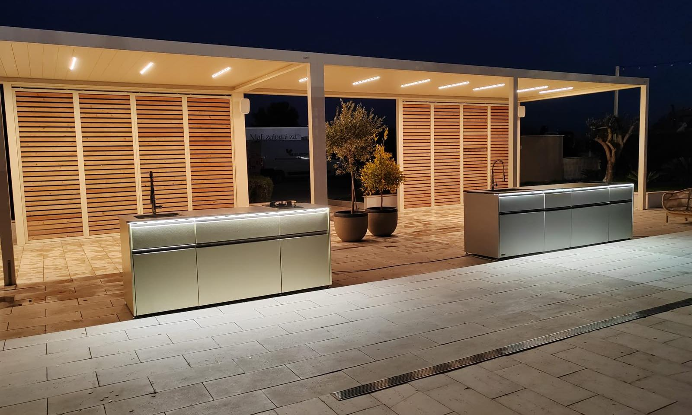
Bioklimatické pergoly · Soltec
Lamely sa otáčajú, voda z nich tečie vnútrom konštrukcie. Veľkú terasu prekryjeme viacerými poľami vedľa seba. Rolety, sklenené steny aj svetlá si vyberiete a my pri návrhu overíme, že všetko do vašej zostavy sadne — ešte pred objednávkou.
6
modelov SL podľa šírky
do 9,3 m
dĺžka jedného modulu
Katalóg na stiahnutie
Bioklimatické pergoly Soltec 2026PDF · slovenčina · 2,4 MBČasté otázky
Nenašli ste odpoveď? Zavolajte nám, poradíme aj bez záväzku.
+421 948 482 266Cenu určuje rozmer, rad, počet stĺpov, odtieň a doplnky. ZIP rolety, sklo, osvetlenie či ohrievače tvoria často podstatnú časť sumy, preto sa pergola nepredáva ako hotový balík. Napíšte nám rozmer terasy a miesto realizácie, cenu na konkrétnu zostavu pošleme do jedného pracovného dňa. Zameranie je zadarmo, doprava aj montáž sú v cene.
Áno. Otočné lamely majú patentovaný tvar s tesnením, takže pri zatvorení voda stečie do žľabu integrovaného v ráme a odíde cez stĺpy. Nie je to utesnená zimná záhrada, pri silnom bočnom vetre sa niečo dostane dnu, ale pod pergolou sa v daždi normálne sedí.
Dažďový snímač lamely zavrie sám. Veterný snímač ich naopak otvorí, aby konštrukcia nebola zbytočne zaťažená. Pri snehu sa riaďte polohou lamiel, ktorú pre vašu zostavu určíme pri návrhu, a sneh odstráňte.
Jeden modul má až 6 m šírky alebo 9,3 m dĺžky (pri SL 240/60 najviac 40 m²). Väčšiu plochu prekryjeme viacerými modulmi vedľa seba. Ktorý rad to bude, vyráta výpočet podľa rozmeru, vetra a snehu u vás, nie číslo z katalógu.
Áno. Podľa konkrétneho riešenia sa kotví k nosnej stene domu alebo stojí samostatne na stĺpoch. Na strešnej terase alebo pod balkónom sa kotví špeciálnymi úchytmi, takže hydroizolácia zostane celistvá. Smer lamiel potvrdíme v návrhu podľa napojenia, rozmeru poľa, odvodnenia a orientácie terasy.
Bočné ZIP rolety, posuvné drevené alebo hliníkové panely, sklenené steny, integrované osvetlenie, ohrievače, reproduktory a diaľkové ovládanie. Doplniť sa dá aj presklený strop Glassport, ktorý pustí do domu viac denného svetla.
Hneď pri návrhu. Rolety, panely, osvetlenie aj snímače treba zohľadniť v ráme, vo vedení aj v prípojkách. Diely chodia zo Slovinska, preto dodatočná prestavba stojí podstatne viac než jedna montáž.
Zvyčajne do 50 m² zastavanej plochy postačí ohlásenie drobnej stavby. Odporúčame si však podmienky a požiadavky overiť na príslušnom stavebnom úrade. K ponuke dostávate rozmery aj osadenie konštrukcie, teda podklady, ktoré úrad zvyčajne žiada.
Prakticky nijako. Práškový lak sa neošetruje. Raz ročne odporúčame prejsť odtok, vybrať lístie a skontrolovať, či sa lamely voľne otáčajú. Nič sa nemaže ani nenatiera.
Vyrába ju Soltec v Slovinsku, kde má aj vlastný vývoj; tieneniu sa venuje od roku 1998 a má za sebou vyše 7 000 realizácií. Systém má európsku značku CE a je odskúšaný na vietor. Na Slovensku robíme kompletný servis my: zameranie, návrh, pätky, dopravu, montáž aj odovzdanie.
Cenová ponuka zadarmo
Ozveme sa do jedného pracovného dňa.
Poslať fotky na obchod@koverta.sk
Súri to? +421 948 482 266 · obchod@koverta.sk
Poslať ten istý dopyt aj e-mailom Ak by k nám formulár nedoručil, e-mail dôjde vždy.
Spojenie zlyhalo, takže dopyt k nám nedošiel. Nič ste nestratili, všetko vyplnené vám otvoríme v e-maile jedným klikom:
Otvoriť e-mail s dopytom Odíde na obchod@koverta.sk aj s tým, čo ste vyplnili.
Alebo rovno zavolajte: +421 948 482 266